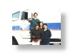

Overview
|
|
Advanced Vehicle Control: Overview.
Electronics and control have become
major elements of modern automobiles. Their use is not limited to control
of a vehicle unit. In 1986, the California Department of Transportation (Caltrans) and the Institute of Transportation
Studies at the University of California at Berkeley established the PATH (Partners for Advances Transit and
Highways) program to investigate the applicability of advanced highway automation, communication, and roadway
electrification technologies. Controls have been identified to be critical in the PATH program, and various projects
are in progress in the area of AVCS (Advanced Vehicle Control Systems).
Under the PATH program, our group has been conducting research on vehicle lateral guidance. So far, it has
covered many issues related to lateral guidance, including the development of accurate nonlinear models of all
types of vehicles as well as developing advanced control algorithm. We have conducted research projects on the
automated lane following problem, the lane change maneuvering problem, and the traction control problem. A
full-sized test vehicle using a discrete magnetic marker track as a reference/sensing system has been successfully
implemented on a test track at the Richmond Field Station of the University of California at Berkeley. A fail-safe
investigation has been conducted to diagnose system failures, such as sensor malfunction or tire bursts, and to
bring the vehicle under control in these emergency situations. Also, research is being conducted to explore the
effects of combining both longitudinal and lateral control to a vehicle.
(M. Tomizuka, ILP Summary 1996-1997)
|

Researchers
|
|
Nagata, Takashi
Automotive power
control
homepage
|
e-mail |
Shi,
Mingyu
Advanced vehicle control
homepage
|
e-mail |
Koo, Shiang-Lung
Advanced vehicle control
homepage
|
e-mail |
Sponsor
California PATH
|